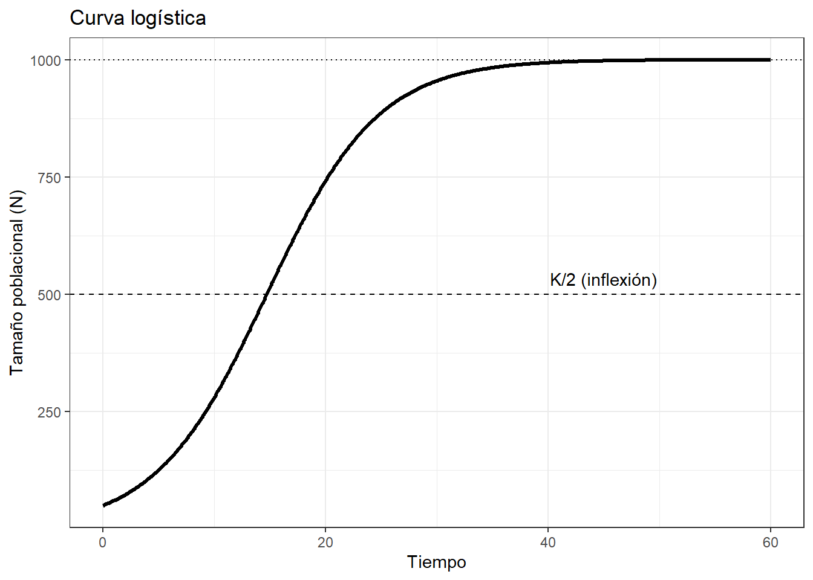
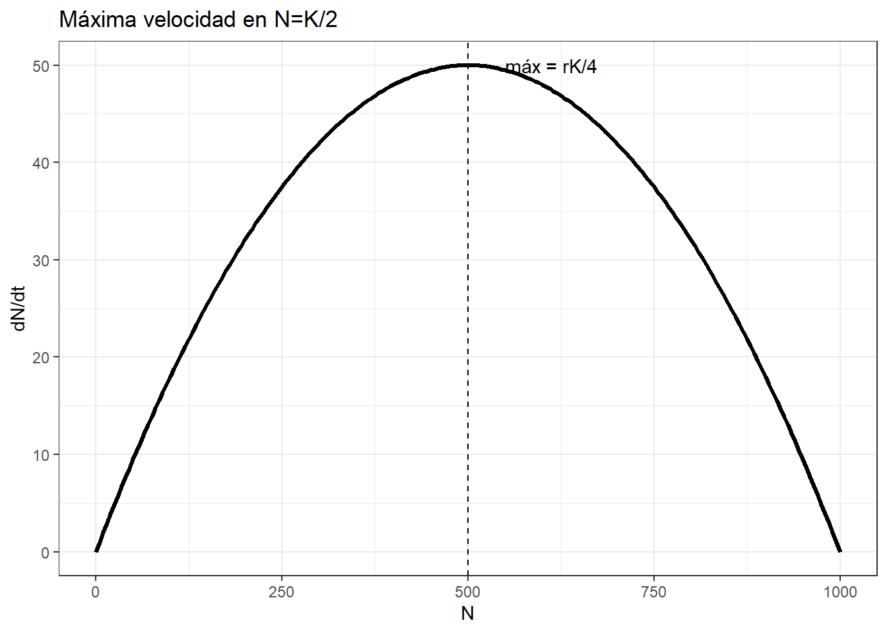
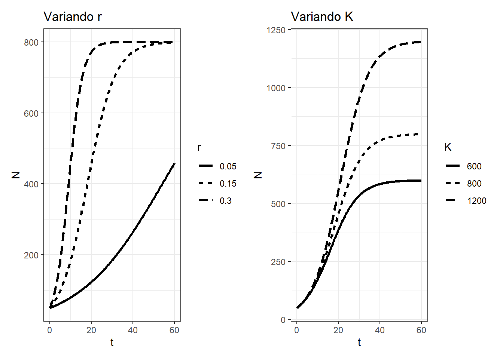
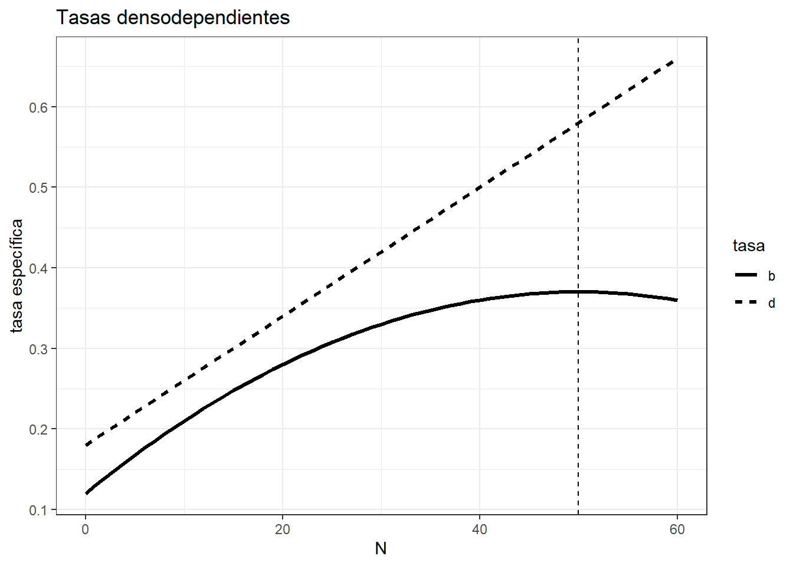
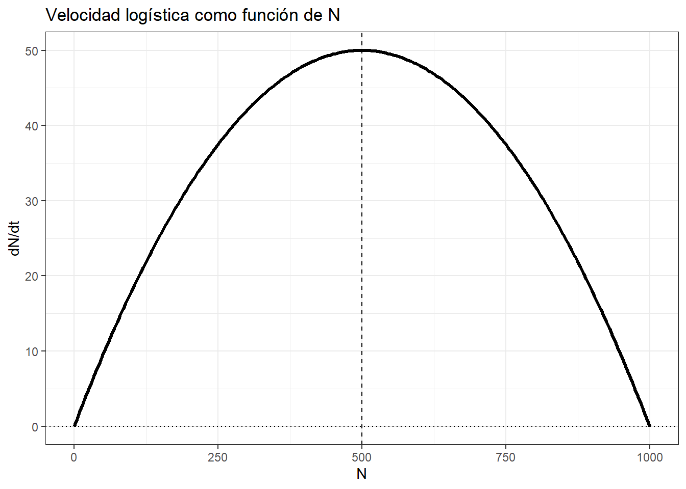
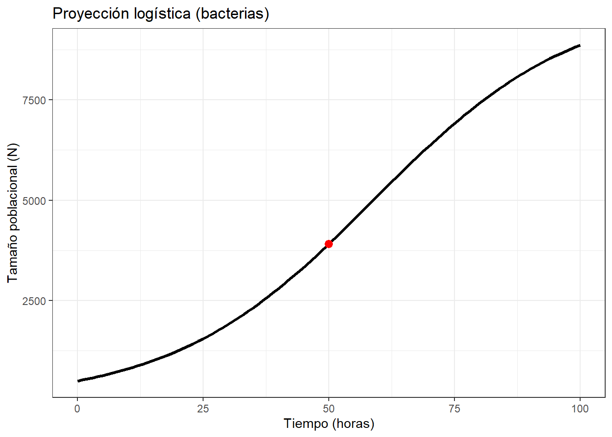
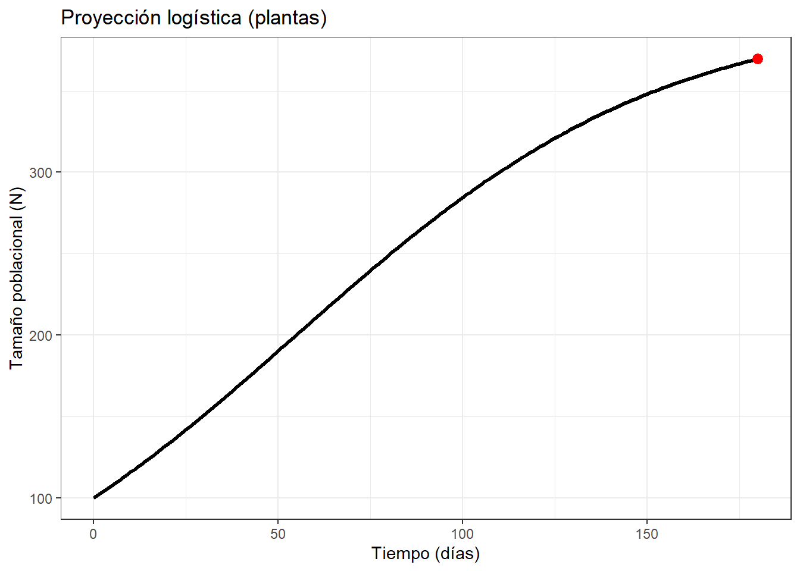
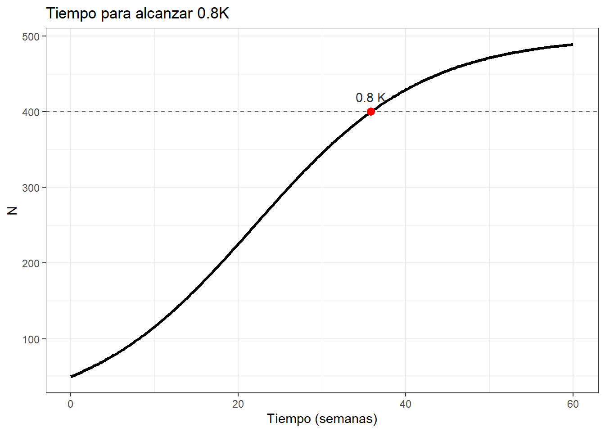
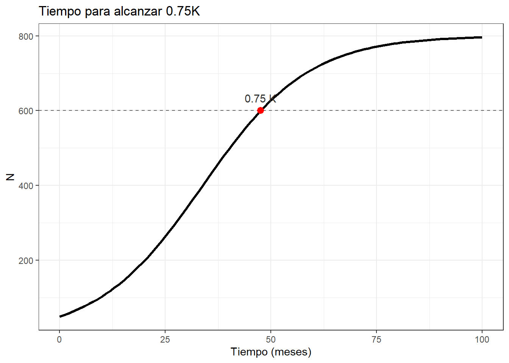
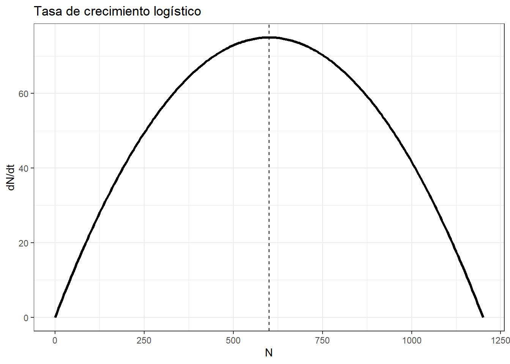

4. Modelos Logísticos de Poblaciones
Introducción
Similar a los modelos exponenciales del capítulo anterior, se puede considerar a esta dinámica ecológica como un modelo de balance de masas (Figura 1):
En diferentes ambientes, el crecimiento poblacional no puede sostenerse indefinidamente: los recursos son finitos y emergen mecanismos densodependientes (competencia, depredación, enfermedades, espacio). El modelo logístico incorpora esta realidad mediante una capacidad de carga \(K\), que representa el tamaño máximo sostenible dadas las condiciones ambientales.
Su forma canónica en tiempo continuo es:
\[ \frac{dN}{dt} = rN \left(1 - \frac{N}{K}\right), \qquad N(t) = \frac{K}{1 + \left(\frac{K-N_0}{N_0}\right)e^{-rt}} \]
Propiedades clave:
- Inflección en \(N=K/2\): transición de aceleración a desaceleración.
- Crecimiento máximo: \[
\left.\frac{dN}{dt}\right|_{N=K/2} = \frac{rK}{4}
\]
- Estabilidad: \(N=0\) (inestable) y \(N=K\) (estable).
Objetivo
- Modelar, visualizar e interpretar trayectorias logísticas y velocidades de cambio ( \(dN/dt\) ) bajo distintos \(r\), \(K\) y \(N_0\); resolver preguntas inversas (tiempos para alcanzar fracciones de \(K\)) y comparar con el caso exponencial.
Competencias específicas
- Formular y resolver problemas logísticos (directos e inversos).
- Visualizar \(N(t)\) y \(dN/dt\) y localizar \(K/2\) como punto de inflexión.
- Interpretar cambios en \(r\) y \(K\) y su efecto en recuperación/colapso poblacional.
- Conectar con tasas específicas \(b'(N)\) y \(d'(N)\) (densodependientes).
Curva logística y punto de inflexión
Código
# Parámetros del modelo
K <- 1000;
r <- 0.2;
N0 <- 50
t <- seq(0, 60, by = 0.1)
N <- K/(1 + ((K-N0)/N0)*exp(-r*t))
tabla <- data.frame(t, N)
# Figura
ggplot(tabla, aes(t, N)) +
geom_line(linewidth=1.1) +
geom_hline(yintercept = K/2, linetype=2) +
annotate("text", x=max(t)*0.75, y=K/2,
label="K/2 (inflexión)", vjust=-0.7) +
geom_hline(yintercept = K, linetype=3) +
labs(x="Tiempo", y="Tamaño poblacional (N)",
title="Curva logística") +
theme_bw()
Velocidad de cambio \(dN/dt\) y su forma parabólica
\[ \frac{dN}{dt} = rN \left(1 - \frac{N}{K}\right) \quad \Rightarrow \quad \text{parábola en } N \text{ con máximo en } N = K/2 \]
Código
# PArámetros del modelo
K <- 1000;
r <- 0.2
Ngrid <- seq(0, K, by=5)
dNdt <- r*Ngrid*(1 - Ngrid/K)
# Figura
ggplot(data.frame(N=Ngrid, dNdt), aes(N, dNdt))+
geom_line(linewidth=1.1) +
geom_vline(xintercept = K/2, linetype=2) +
annotate("text", x=K*0.55, y=max(dNdt),
label="máx = rK/4", hjust=0) +
labs(x="N", y="dN/dt", title="Máxima velocidad en N=K/2") +
theme_bw()
Efecto de \(r\) y \(K\) (comparaciones)
Código
# Librería requerida
library(tidyverse)── Attaching core tidyverse packages ──────────────────────── tidyverse 2.0.0 ──
✔ dplyr 1.1.4 ✔ readr 2.1.5
✔ forcats 1.0.0 ✔ stringr 1.5.2
✔ lubridate 1.9.4 ✔ tibble 3.3.0
✔ purrr 1.1.0 ✔ tidyr 1.3.1
── Conflicts ────────────────────────────────────────── tidyverse_conflicts() ──
✖ dplyr::filter() masks stats::filter()
✖ dplyr::lag() masks stats::lag()
ℹ Use the conflicted package (<http://conflicted.r-lib.org/>) to force all conflicts to become errorsCódigo
library(patchwork)
curve_log <- function(K, r, N0, t) K/(1 + ((K-N0)/N0)*exp(-r*t))
t <- seq(0, 60, by=0.2); N0 <- 50
dr <- tibble(r=c(0.05, 0.15, 0.30))
df_r <- purrr::map_dfr(dr$r, \(rr){
tibble(t=t, N=curve_log(800, rr, N0, t), r=factor(rr))
})
p_r <- ggplot(df_r, aes(t, N, linetype=r))+
geom_line(linewidth=1.1)+theme_bw()+labs(title="Variando r", linetype="r")
dK <- tibble(K=c(600, 800, 1200))
df_K <- purrr::map_dfr(dK$K, \(KK){
tibble(t=t, N=curve_log(KK, 0.15, N0, t), K=factor(KK))
})
p_K <- ggplot(df_K, aes(t, N, linetype=K))+
geom_line(linewidth=1.1)+theme_bw()+labs(title="Variando K", linetype="K")
p_r + p_K
Fórmulas prácticas
Solución en \(t\): \[ N(t) = \frac{K}{1 + \left(\frac{K-N_0}{N_0}\right)e^{-rt}} \].
Tiempo para alcanzar un valor \(N^*\) (0 < \(N^*\) < K):
\[ t(N^*) = \frac{1}{r}\ln\left(\frac{K-N_0}{N_0}\cdot\frac{N^*}{K-N^*}\right) \]
- Tiempo para un porcentaje \(fK\) (p.ej., \(f=0.8\)):
\[ t(fK) = \frac{1}{r}\ln\left(\frac{K-N_0}{N_0}\cdot\frac{f}{1-f}\right) \]
- Máximo crecimiento:
\[ \left.\frac{dN}{dt}\right|_{N=K/2} = \frac{rK}{4} \]
Ejemplos guiados (basados en tus preguntas)
Nota: Las unidades siguen tus enunciados (hora, día, semana, mes, año). Ajusta según el contexto de clase.
Ejemplo 1 — Tasa inicial \(dN/dt\) (tu #1 y #5)
\(N_0 = 500,\; K = 10000,\; r = 0.05\) (bacterias/hora).
Cálculo:
\[ \left.\frac{dN}{dt}\right|_{t=0} = rN_0 \left(1 - \frac{N_0}{K}\right) = 0.05 \times 500 \times \left(1 - \frac{500}{10000}\right) = 23.75 \]
Código
r <- 0.05; N0 <- 500; K <- 10000
dNdt_0 <- r*N0*(1 - N0/K); dNdt_0[1] 23.75Análogo (#5). \(N_0=200, K=5000, r=0.04\\Rightarrow dN/dt=7.84\) al inicio.
Código
r <- 0.04; N0 <- 200; K <- 5000
r*N0*(1 - N0/K)[1] 7.68Ejemplo 2 — Tamaño tras 6 meses (tu #2)
Plantas: \(N_0 = 100,\; K = 400,\; r = 0.02 \;\text{día}^{-1}\); \(t = 180\) días.
Cálculo:
\[ N(t) = \frac{K}{1 + \left(\frac{K-N_0}{N_0}\right)e^{-rt}} \]
Código
N0 <- 100; K <- 400; r <- 0.02; t <- 180
N_t <- K/(1 + ((K-N0)/N0)*exp(-r*t)); N_t[1] 369.6956Resultado esperado: \(\\approx 369.73\) plantas.
Ejemplo 3 — Tiempo hasta 80% de K (tu #3)
Ratones: \(N_0 = 50,\; K = 500,\; r = 0.1 \;\text{semana}^{-1}\).
Quieres \(N = 0.8K = 400\).
Cálculo:
\[ t = \frac{1}{r}\ln\left(\frac{K-N_0}{N_0} \cdot \frac{N}{K-N}\right) \]
Código
N0 <- 50; K <- 500; r <- 0.1; Nstar <- 0.8*K
t_req <- (1/r)*log(((K-N0)/N0)*(Nstar/(K-Nstar))); t_req[1] 35.83519Resultado esperado: \(\\approx 35.83\) semanas.
Ejemplo 4 — \(b'(N)\) cuadrática y \(d'(N)\) lineal (tu #4)
Funciones:
\(b'(N) = 0.12 + 0.01N - 0.0001N^2\)
\(d'(N) = 0.18 + 0.008N\)
- Máximo de \(b'(N)\): \(db'/dN=0.01-0.0002N=0 \\Rightarrow N=50\).
\(b'(50)=0.37\) (máximo).
Código
library(kableExtra)
Adjuntando el paquete: 'kableExtra'The following object is masked from 'package:dplyr':
group_rowsCódigo
b_p <- function(N) 0.12 + 0.01*N - 0.0001*N^2
d_p <- function(N) 0.18 + 0.008*N
N_vals <- seq(0, 50, by=5)
tab <- tibble(N=N_vals,
`b'`=round(b_p(N_vals),4),
`d'`=round(d_p(N_vals),4))
kbl(tab, caption = "Valores de b' y d' en función de N (cada 5 unidades)") %>%
kable_styling(full_width = FALSE, bootstrap_options = c("striped","hover"))| N | b' | d' |
|---|---|---|
| 0 | 0.1200 | 0.18 |
| 5 | 0.1675 | 0.22 |
| 10 | 0.2100 | 0.26 |
| 15 | 0.2475 | 0.30 |
| 20 | 0.2800 | 0.34 |
| 25 | 0.3075 | 0.38 |
| 30 | 0.3300 | 0.42 |
| 35 | 0.3475 | 0.46 |
| 40 | 0.3600 | 0.50 |
| 45 | 0.3675 | 0.54 |
| 50 | 0.3700 | 0.58 |
Código
# Parámetros del modelo
tabla <- tibble(N=seq(0,60,by=1)) |>
mutate(b = b_p(N), d = d_p(N)) |>
pivot_longer(cols=c(b,d), names_to="tasa", values_to="valor")
# Figura de la proyección
ggplot(tabla, aes(N, valor, linetype=tasa)) +
geom_line(linewidth=1.1) +
geom_vline(xintercept = 50, linetype=2) +
labs(y="tasa específica",
title="Tasas densodependientes") +
theme_bw()
Ejemplo 5 — Población tras 12 meses (tu #6)
Peces: \(N_0=150,\ K=3000,\ r=0.03\) mes\(^{-1}\); \(t=12\) meses.
Código
N0 <- 150; K <- 3000; r <- 0.03; t <- 12
K/(1 + ((K-N0)/N0)*exp(-r*t))[1] 210.4399Ejemplo 6 — Tiempo hasta 75% de K (tu #7)
Conejos: \(N_0=50,\ K=800,\ r=0.08\) mes\(^{-1}\); \(N=0.75K=600\).
Código
N0 <- 50; K <- 800; r <- 0.08; Nstar <- 0.75*K
(1/r)*log(((K-N0)/N0)*(Nstar/(K-Nstar)))[1] 47.58328Ejemplo 7 — K reducida por degradación (tu #8)
Aves: \(K=1200 \\Rightarrow K' = 840\) (reducción 30%), \(N_0=200, r=0.06\) año\(^{-1}\).
Tiempo hasta \(K'\): formalmente \(N(t)\\to K'\) asintóticamente; no existe un tiempo finito para “alcanzar exactamente” \(K'\) (se aproxima cada vez más). En la práctica, se usa un umbral cercano, p.ej. 99% de \(K'\).
Código
N0 <- 200; Kp <- 840; r <- 0.06
f <- 0.99; Nstar <- f*Kp
t_99 <- (1/r)*log(((Kp-N0)/N0)*(Nstar/(Kp-Nstar))); t_99[1] 95.97118Corrección conceptual importante: si en tus notas aparece un tiempo exacto para \(N(t)=K'\), revisa: no existe solución finita para llegar exactamente a \(K'\); siempre es un límite.
Ejemplo 8 — Tamaño tras 24 h (tu #9)
Bacterias: \(r=0.07\) h\(^{-1}\), \(K=50000\), \(N_0=1000\), \(t=24\) h.
Código
r <- 0.07; K <- 50000; N0 <- 1000; t <- 24
K/(1 + ((K-N0)/N0)*exp(-r*t))[1] 4934.702Nota: Revisa tus apuntes si ves \(\\approx 4946\); con estos parámetros el valor suele ser mayor. El cálculo correcto queda reproducible en el chunk anterior.
Ejemplo 9 — Equilibrio con \(b'(N)\) y \(d'(N)\) (tu #10)
\(b' = 0.10 + 0.015N - 0.00015N^2\)
\(d' = 0.12 + 0.006N\)
Puntos de equilibrio: resolver \(b'(N)=d'(N)\).
Código
b2 <- function(N) 0.10 + 0.015*N - 0.00015*N^2
d2 <- function(N) 0.12 + 0.006*N
f_eq <- function(N) b2(N) - d2(N)
uniroot_all <- function(f, interval, n=2000){
xs <- seq(interval[1], interval[2], length.out = n)
ys <- f(xs)
sign_change <- which(diff(sign(ys)) != 0)
roots <- purrr::map_dbl(sign_change, ~uniroot(f, c(xs[.x], xs[.x+1]))$root)
unique(round(roots, 6))
}
roots <- uniroot_all(f_eq, c(0, 1000))
roots[1] 2.311254 57.688746Código
# Tabla
df <- tibble(N=seq(0, 300, by=1),
b=b2(N), d=d2(N))
# Figura
ggplot(df, aes(N)) +
geom_line(aes(y=b, linetype="b'(N)"), linewidth=1.1) +
geom_line(aes(y=d, linetype="d'(N)"), linewidth=1.1) +
geom_vline(xintercept = roots, linetype=2) +
labs(y="tasa específica", linetype="", title="Equilibrios por intersección de tasas") +
theme_bw()
Ejemplo 10 — Tiempo para duplicar \(N_0\) (tu #11)
Zorros: \(r=0.05\) año\(^{-1}\), \(K=1000\), \(N_0=200\). Hallar \(t\) tal que \(N(t)=2N_0=400\).
Código
r <- 0.05; K <- 1000; N0 <- 200; Nstar <- 2*N0
(1/r)*log(((K-N0)/N0)*(Nstar/(K-Nstar)))[1] 19.61659Resultado reproducible: \(\\approx 19.52\) años.
Ejemplo 11 — Tasa \(dN/dt\) en \(t=10\) d (tu #12)
Algas: \(r=0.09\) día\(^{-1}\), \(K=10000\), \(N_0=500\).
1) Calcular \(N(10)\) y 2) Evaluar \(dN/dt\) en ese \(N(10)\).
Código
r <- 0.09;
K <- 10000;
N0 <- 500;
t <- 10
N10 <- K/(1 + ((K-N0)/N0)*exp(-r*t))
dNdt_10 <- r*N10*(1 - N10/K)
N10; dNdt_10[1] 1146.155[1] 91.33091C. Errores comunes e interpretación
- Suponer que se “alcanza” exactamente \(K\) en tiempo finito. En realidad, \(N(t)\\to K\) asintóticamente; usa umbrales (p.ej., 95–99% de \(K\)) para tiempos prácticos.
- Confundir el máximo crecimiento con \(N_0\) alto: el máximo está en \(N=K/2\), no en \(N\\approx K\).
- Ajustes gráficos: compara escenarios en la misma escala; usa transformaciones solo si justifican una mejor interpretación.
- Unidades: mantén consistencia entre \(r\), \(t\) y los datos (día, semana, mes, año).
Código
N0 <- 50;
K <- 1000;
r <- 0.2
f <- c(0.95, 0.99)
t_f <- (1/r)*log(((K-N0)/N0)*(f/(1-f)))
tibble(umbral=f, tiempo=t_f) |>
kbl(caption="Tiempos (unidades de t) para alcanzar fracciones de K") |>
kable_styling(full_width = FALSE)| umbral | tiempo |
|---|---|
| 0.95 | 29.44439 |
| 0.99 | 37.69779 |
Tiempo para distintos umbrales de K (95%, 99%) con N0=50, K=1000, r=0.2.
D. Aplicaciones ecológicas y ambientales
- Restauración y manejo: proyección de recuperación bajo aumento de hábitat (sube \(K\)) o reducción de mortalidad (sube \(r\)).
- Invasiones biológicas: transición de fase exponencial a saturación por límites de recursos.
- Pesquerías: rendimiento máximo sostenible se relaciona con la zona alrededor de \(K/2\).
- Epidemiología simple: saturación por susceptibles finitos (análogos logísticos).
E. Conclusiones
El modelo logístico ofrece un puente entre el ideal exponencial y la realidad densodependiente. Su valor didáctico radica en: (i) localizar el punto de máxima velocidad (\(K/2\)), (ii) vincular parámetros (\(r\), \(K\), \(N_0\)) con tiempos y tamaños alcanzables, y (iii) guiar decisiones de manejo y conservación con metas cercanas a \(K\) (p.ej., 90–95%) en horizontes temporales realistas.
F. Cuestionario
F.1 Preguntas teóricas
Explique la diferencia conceptual entre crecimiento exponencial y crecimiento logístico en poblaciones.
¿Qué representa la capacidad de carga (K) y por qué no debe interpretarse como un valor fijo inmutable en ecología?
Interprete el significado ecológico del punto de inflexión en la curva logística.
Demuestre por qué la velocidad máxima de crecimiento ocurre en \(N=K/2\).
¿Cuál es la forma de la función \(dN/dt\) en relación con \(N\) y qué nos indica su carácter parabólico?
Explique cómo se calcula el tiempo necesario para que una población alcance un porcentaje específico de \(K\) (ej. 80%).
¿Por qué el modelo logístico describe mejor poblaciones en ambientes con recursos limitados que el modelo exponencial?
Mencione un ejemplo ecológico donde el modelo logístico es más realista que el exponencial, y justifique su elección.
¿Por qué el tamaño poblacional no llega a K en tiempo finito sino que se aproxima asintóticamente?
Realice un mini-experimento numérico: simule con R el crecimiento logístico de una población con \(N_0=50\), \(K=1000\) y \(r=0.2\), y modifique el valor de \(r\) para observar los cambios en la curva.
F.2 Preguntas de cálculo y gráficas

Imagen tomada de AnnaShvets
- Una población de bacterias sigue un modelo logístico con \(N_0=500\), \(K=10000\) y \(r=0.05\) h⁻¹.
- Calcule el tamaño poblacional en \(t=50\) horas.
- Grafique la proyección logística de la población en los primeros 100 periodos de tiempo
- Una población de plantas crece según la ecuación logística con \(N_0=100\), \(K=400\), \(r=0.02\) día⁻¹.
- ¿Cuántas plantas habrá después de 6 meses?
- Grafique la proyección de \(N(t)\) durante 180 días.
- Una población de ratones inicia con \(N_0=50\), capacidad de carga \(K=500\) y \(r=0.1\) semana⁻¹.
- ¿Cuántas semanas necesita la población para llegar al 80% de \(K\)?
- Grafique \(N(t)\) y marque en la curva el valor \(N=0.8K\).
- Una población de conejos crece de manera logística con \(N_0=50\), \(K=800\) y \(r=0.08\) mes⁻¹.
- ¿En cuántos meses alcanzará el 75% de \(K\)?
- Grafique la proyección logística durante 100 meses.
F.3 Preguntas de cálculo (logístico)
Una población de hongos inicia con \(N_0=200\), \(K=5000\) y \(r=0.04\) día⁻¹. ¿Cuál es la tasa inicial de crecimiento \(dN/dt\)?
Una colonia bacteriana tiene \(N_0=1000\), \(K=50000\), \(r=0.07\) h⁻¹. Calcule \(N(24)\).
Una población de peces inicia con \(N_0=150\), \(K=3000\), \(r=0.03\) mes⁻¹. Determine el tamaño poblacional después de 1 año.
En un ecosistema, \(K=1200\) aves se reduce un 30% por pérdida de hábitat. Si \(N_0=200\), \(r=0.06\) año⁻¹:
- Determine la nueva capacidad de carga \(K’\).
- Calcule el tiempo para alcanzar el 99% de \(K’\).
Una población de zorros sigue \(N_0=200\), \(K=1000\), \(r=0.05\) año⁻¹. ¿Cuánto tiempo tardará en duplicar su tamaño inicial?
Una población de algas inicia con \(N_0=500\), \(K=10000\), \(r=0.09\) día⁻¹. Calcule \(N(10)\) y la tasa \(dN/dt\) en ese tiempo.
Una población de aves comienza con \(N_0=50\), \(K=2000\), \(r=0.04\) año⁻¹. Determine el tiempo requerido para alcanzar el 90% de la capacidad de carga.
Una población de invertebrados tiene \(K=500\), \(r=0.15\) mes⁻¹ y \(N_0=10\).
- Calcule \(N(12)\).
- Determine el tiempo en que alcanza \(N=250\).
- Una población de microbios en laboratorio inicia con \(N_0=300\), capacidad de carga \(K=1200\) y \(r=0.25\) día⁻¹.
- Determine la tasa de crecimiento máxima posible.
- Grafique la función \(dN/dt\) en función de \(N\) y localice el máximo.
Una población silvestre crece con \(N_0=30\), \(K=600\), \(r=0.12\) mes⁻¹. ¿Qué tamaño poblacional tendrá en 20 meses?
Una colonia de ranas se modela logísticamente con \(N_0=80\), \(K=2000\), \(r=0.1\) mes⁻¹. Determine el tiempo necesario para alcanzar \(N=1000\).
Una población de virus en un cultivo sigue un modelo logístico. En 24 h pasa de \(N_0=10^3\) a \(N_{24}=10^9\) y la capacidad de carga estimada es \(K=2\\times10^9\).
- Estime \(r\).
- Calcule el tiempo de duplicación instantáneo en \(t=0\) usando \(T_d \\approx \\dfrac{\\ln 2}{r(1-N_0/K)}\). Discuta la diferencia con el exponencial.
Una población endémica de mariposas decrece logísticamente por pérdida de hábitat: \(K=150\) g de biomasa estable. Si \(N_0=127\) g y \(r=-0.125\\,año^{-1}\), proyecte la biomasa a 6 años.
La población de EE.UU. alcanzó \(200\) millones en 1967 y \(303\) millones en 2007. Suponga \(K=450\) millones.
- Estime \(r\) con la solución logística.
- Proyecte \(N(2027)\). Compare con el exponencial y discuta la diferencia cerca de \(K\).
- Elefantes: \(N_0=800\), \(r=0.02\\,año^{-1}\), \(K=5000\).
- ¿En cuántos años alcanzan el triple de \(N_0\) (2400)?
- ¿Qué ocurriría si el “triple” excediera \(K\)?
- Mundo 2023: \(N_0=8.1\) billones. Escenarios 2050:
- Bajo: \(7.3\) (con \(K=7.5\))
- Alto: \(10.7\) (con \(K=11.5\))
Para \(t=27\) años: estime \(r\) en cada escenario y compare con la tasa exponencial.
- Con \(r=0.028\\,año^{-1}\) y \(N_0=2\), \(K=12\\times10^9\):
- ¿En cuánto tiempo se alcanza el 99% de \(10\\times10^9\)?
- ¿Cuál es el tiempo de duplicación en \(t=0\) y cómo cambia cerca de \(N=K/2\)?
- Se esperaba que la población humana doblara en ~50 años. Suponga \(K=15\) billones y \(N_{1993}=5.4\) billones.
- Encuentre \(r\) tal que \(N(1993+50)\\approx 2N_{1993}\).
- Proyecte \(N(2030)\) y compare con el exponencial.
- Escarabajos: \(N_0=3000\). En 1 mes hubo 400 nacimientos y 150 muertes (saldo +250). Suponga \(K=6000\).
- Estime \(r\) a partir de \(dN/dt\\approx rN_0(1-N_0/K)\\approx B-D\).
- Proyecte \(N\) a 6 meses con la solución logística.
Orquídeas: \(b'=0.0021\), \(d'=0.0020\), \(N_0=40\). Un centro comercial reduce \(K\) de 400 a 120.
Explique cómo la reducción de \(K\) afecta la probabilidad de extinción bajo logística.
E. coli: \(N_0=10^3\) a \(N_6=2\\times10^9\) en 6 h, con \(K=3\\times10^9\).
- Estime \(r\).
- Compare el número de duplicaciones esperadas en 6 h bajo logística vs. exponencial.
- Invasora vegetal bajo control: decrece 3% anual; \(N_0=5000\), \(K=6000\).
- Proyecte \(N(20)\).
- ¿Cuánto tiempo para llegar a la mitad de \(N_0\)?
- Una colonia bacteriana se duplica cada 4 h cuando \(N\\ll K\). Si \(K=10^9\), \(N_0=10^5\):
- Estime \(r\) local con \(T_d=\\ln2/[r(1-N_0/K)]\).
- ¿Cuánto tiempo para llegar a \(10N_0\)?
- Conejos: de 250 a 800 en 12 meses, con \(K=3000\).
- Estime \(r\).
- Proyecte \(N(24)\) y compare con el exponencial.
- Cultivo celular: 10 000 → 25 000 en 48 h; \(K=60 000\).
- Estime \(r\).
- Estime \(N(72)\). ¿Ya se nota desaceleración?
- Algas: en 30 días la población se triplica (\(N_{30}=3N_0\)), \(K=12N_0\).
- Estime \(r\).
- ¿En cuántos días se cuadruplica (\(4N_0\))?
- Bacterias: crecen 25% cada 2 h cuando \(N\\ll K\). Si \(N_0=800\), \(K=2\\times10^6\):
- Estime \(r\).
- Proyecte \(N(10\\,h)\) con logística y compare con el exponencial.
Respuestas a las preguntas de cálculo y gráficas (F2)
1) Diferencia conceptual entre crecimiento exponencial y logístico
El modelo exponencial se describe mediante:
\[ N(t) = N_0 e^{rt} \]
donde \(N_0\) es la población inicial, \(r\) la tasa de crecimiento instantánea y \(t\) el tiempo.
Este modelo supone recursos ilimitados, por lo que el crecimiento es indefinido.
El modelo logístico, en cambio, incorpora la capacidad de carga \(K\):
\[ \frac{dN}{dt} = rN \left( 1 - \frac{N}{K} \right) \]
y su solución es:
\[ N(t) = \frac{K}{1 + \left( \frac{K-N_0}{N_0} \right)e^{-rt}} \]
Aquí el crecimiento se desacelera cuando \(N\) se aproxima a \(K\), reflejando la influencia de los recursos limitados.
Conclusión: El modelo exponencial describe bien la fase inicial de poblaciones, mientras que el logístico es más realista a largo plazo.
2) ¿Qué representa la capacidad de carga (\(K\))?
La capacidad de carga (\(K\)) es el número máximo de individuos que un ambiente puede sostener de manera estable.
Sin embargo, \(K\) no es fijo, pues varía según:
- La disponibilidad de alimento y espacio.
- Factores climáticos (sequías, estaciones).
- Presencia de depredadores o enfermedades.
- Intervenciones humanas (manejo, restauración, destrucción de hábitat).
En muchos estudios se trabaja con \(K\) como un valor dinámico que cambia en el tiempo.
3) Significado del punto de inflexión (\(N=K/2\))
El punto de inflexión en la curva logística ocurre cuando \(N=K/2\).
En este punto:
- La pendiente \(\frac{dN}{dt}\) es máxima.
- Para \(N<K/2\), la población acelera su crecimiento.
- Para \(N>K/2\), el crecimiento se desacelera por efectos densodependientes.
Visualmente, es el momento en que la curva sigmoidea pasa de crecimiento acelerado a desacelerado.
4) Demostración de la velocidad máxima en \(N=K/2\)
Partimos de la ecuación:
\[ \frac{dN}{dt} = rN \left(1 - \frac{N}{K}\right) \]
Reordenando:
\[ \frac{dN}{dt} = rN - \frac{r}{K}N^2 \]
Derivamos respecto a \(N\):
\[ \frac{d}{dN}\left(\frac{dN}{dt}\right) = r \left(1 - \frac{2N}{K}\right) \]
Igualamos a cero para encontrar el extremo:
\[ 1 - \frac{2N}{K} = 0 \;\;\Rightarrow\;\; N=\frac{K}{2} \]
La segunda derivada es negativa, por lo que se trata de un máximo.
En consecuencia, la velocidad máxima de crecimiento poblacional ocurre en \(N=K/2\) y su valor es:
\[ \left.\frac{dN}{dt}\right|_{N=K/2} = \frac{rK}{4} \]
Código
K <- 1000; r <- 0.2
N <- seq(0, K, by=1)
dNdt <- r*N*(1 - N/K)
which.max(dNdt); N[which.max(dNdt)]; max(dNdt)[1] 501[1] 500[1] 505) Forma de la función \(dN/dt\) y su carácter parabólico
La expresión:
\[ \frac{dN}{dt} = rN - \frac{r}{K}N^2 \]
es una parábola cóncava hacia abajo.
- Tiene raíces en \(N=0\) y \(N=K\) (equilibrios poblacionales).
- Su máximo ocurre en \(N=K/2\).
- El valor máximo es \(\frac{rK}{4}\).
Esto refleja la tensión entre el crecimiento (\(rN\)) y la limitación por recursos (\(-rN^2/K\)).
Código
# Parámetros
K <- 1000;
r <- 0.2
N <- seq(0, K, by=5)
dNdt <- r*N*(1 - N/K)
# Figura de la proyeccion
ggplot(tibble(N, dNdt), aes(N, dNdt)) +
geom_line(linewidth=1.1) +
geom_vline(xintercept = K/2, linetype=2) +
geom_hline(yintercept = 0, linetype=3) +
labs(x="N", y="dN/dt", title="Velocidad logística como función de N") +
theme_bw()
Respuestas a las preguntas de cálculo y gráficas (F2)
Respuestas a las preguntas de cálculo y gráficas (F.2 — Logístico)
1) Población de bacterias (horas)
Una población de bacterias sigue un modelo logístico con \(N_0=500\), \(K=10000\) y \(r=0.05\\ \\text{h}^{-1}\).
(1) Calcule \(N(50)\).
(2) Grafique la proyección logística en los primeros 100 periodos de tiempo (horas).
Fórmula del modelo logístico (solución en tiempo):
\[ N(t) = \frac{K}{1 + \left( \frac{K-N_0}{N_0} \right)e^{-rt}} \]
Procedimiento. Usamos la expresión anterior para evaluar \(t=50\) e integramos en R una función auxiliar.
Código
# Función requerida
N_log <- function(N0, K, r, t){
K / (1 + ((K - N0)/N0)*exp(-r*t))
}
# Parámetros del modelo
N0 <- 500;
K <- 10000;
r <- 0.05
t_eval <- 50
N_50 <- N_log(N0, K, r, t_eval)
round(N_50, 2)[1] 3906.84Gráfica de la proyección (0–100 h).
Código
# Parámetros del modelo
t <- 0:100
df <- tibble(t = t, N = N_log(N0, K, r, t))
# Figura
ggplot(df, aes(t, N)) +
geom_line(linewidth = 1.1) +
geom_point(data = tibble(t=t_eval, N=N_50), color="red", size=2.8) +
labs(x = "Tiempo (horas)", y = "Tamaño poblacional (N)",
title = "Proyección logística (bacterias)") +
theme_bw()
2) Población de plantas (días)
\(N_0=100\), \(K=400\), \(r=0.02\\ \\text{día}^{-1}\).
(1) Calcule \(N(180)\) (aprox. 6 meses).
(2) Grafique \(N(t)\) durante 180 días.
Fórmula:
\[ N_{(t)} = \frac{K}{1 + \left( \frac{K-N_0}{N_0} \right)e^{-rt}} \]
Cálculo y figura.
Código
# Parámetros del modelo
N0 <- 100;
K <- 400;
r <- 0.02
t_eval <- 180
N_180 <- N_log(N0, K, r, t_eval); round(N_180, 2)[1] 369.7Código
# Parámetros del modelo
t <- 0:180
df <- tibble(t = t, N = N_log(N0, K, r, t))
# Figura
ggplot(df, aes(t, N)) +
geom_line(linewidth = 1.1) +
geom_point(data = tibble(t=t_eval, N=N_180),
color="red", size=2.8) +
labs(x = "Tiempo (días)",
y = "Tamaño poblacional (N)",
title = "Proyección logística (plantas)") +
theme_bw()
3) Población de ratones (semanas)
\(N_0=50\), \(K=500\), \(r=0.1\ {semana}^{-1}\).
(1) ¿Cuántas semanas se requieren para llegar a \(N=0.8K\)?
(2) Grafique \(N(t)\) y marque \(N=0.8K\).
Tiempo para alcanzar un valor \(N^*\) (\(0<N^*<K\)):
\[ t(N^*) = \frac{1}{r} \ln \left( \frac{K-N_0}{N_0} \cdot \frac{N^*}{K-N^*} \right) \]
Aplicando \(N^* = 0.8K\):
\[ t(0.8K) = \frac{1}{r} \ln \left( \frac{K-N_0}{N_0} \cdot \frac{0.8}{0.2} \right) \]
\[ t(0.8K) = \frac{1}{r} \ln \left( \frac{K-N_0}{N_0} \cdot 4 \right) \]
Código
# Parámetros del modelo
N0 <- 50;
K <- 500;
r <- 0.1
f <- 0.8; N_star <- f*K
t_star <- (1/r)*log(((K - N0)/N0) * (N_star/(K - N_star)))
t_star[1] 35.83519Gráfica y marcación del umbral.
Código
# Parámetros del modelo
t_max <- ceiling(t_star*1.25)
t <- seq(0, max(60, t_max), by=0.25)
df <- tibble(t=t, N=N_log(N0, K, r, t))
# Figura
ggplot(df, aes(t, N)) +
geom_line(linewidth=1.1) +
geom_hline(yintercept = N_star, linetype=2, color="gray40") +
geom_point(data=tibble(t=t_star, N=N_star), color="red", size=2.8) +
annotate("text", x=t_star, y=N_star, label="0.8 K", vjust=-1, color="gray20") +
labs(x="Tiempo (semanas)", y="N", title="Tiempo para alcanzar 0.8K") +
theme_bw()
4) Población de conejos (meses)
\(N_0=50\), \(K=800\), \(r=0.08\\ \\text{mes}^{-1}\).
(1) ¿En cuántos meses se alcanza \(N=0.75K\)?
(2) Grafique la proyección logística durante 100 meses y marque \(0.75K\).
Tiempo a una fracción \(fK\) (con \(0<f<1\)):
\[ t(fK) = \frac{1}{r} \ln \left( \frac{K-N_0}{N_0} \cdot \frac{f}{1-f} \right) \]
Código
N0 <- 50; K <- 800; r <- 0.08
f <- 0.75; N_star <- f*K
t_star <- (1/r)*log(((K - N0)/N0) * (f/(1 - f)))
t_star[1] 47.58328Gráfica (0–100 meses) con marcación del umbral.
Código
# Parámetros del modelo
t <- 0:100
df <- tibble(t=t, N=N_log(N0, K, r, t))
# Parámetros del modelo
ggplot(df, aes(t, N)) +
geom_line(linewidth=1.1) +
geom_hline(yintercept = N_star, linetype=2, color="gray40") +
geom_point(data=tibble(t=t_star, N=N_star), color="red", size=2.8) +
annotate("text", x=t_star, y=N_star, label="0.75 K", vjust=-1, color="gray20") +
labs(x="Tiempo (meses)", y="N", title="Tiempo para alcanzar 0.75K") +
theme_bw()
Respuestas a las preguntas de cálculo (F3)
5. Tasa inicial de crecimiento de hongos
Una población de hongos inicia con \(N_0=200\), \(K=5000\) y \(r=0.04\) día\(^{-1}\). ¿Cuál es la tasa inicial de crecimiento \(dN/dt\)?
Procedimiento:
La derivada logística es \[ \frac{dN}{dt} = rN\left(1-\frac{N}{K}\right). \]
Evaluamos en \(t=0\) con \(N=N_0\):
Código
r <- 0.04; N0 <- 200; K <- 5000
dNdt0 <- r*N0*(1 - N0/K); dNdt0[1] 7.68Análisis: la tasa inicial es positiva y proporcional a \(N_0(1-N_0/K)\).
6. Proyección bacteriana a 24 horas
\(N_0=1000\), \(K=50000\), \(r=0.07\) h\(^{-1}\). Calcule \(N(24)\).
Fórmula:
\[ N(t) = \frac{K}{1 + \left(\frac{K-N_0}{N_0}\right)e^{-rt}}. \]
Cálculo:
Código
N0 <- 1000; K <- 50000; r <- 0.07
N_24 <- N_log(N0, K, r, 24); round(N_24,0)[1] 4935Análisis: la población se acerca al límite \(K\) con desaceleración progresiva.
7. Población de peces a 1 año
\(N_0=150\), \(K=3000\), \(r=0.03\) mes\(^{-1}\). Determine \(N(12)\).
Procedimiento:
\[ N(12) = \frac{K}{1 + \left(\frac{K-N_0}{N_0}\right)e^{-r\cdot 12}}. \]
Código
N0 <- 150; K <- 3000; r <- 0.03
N_12 <- N_log(N0, K, r, 12); round(N_12,0)[1] 210Análisis: la trayectoria aún está en la fase sigmoidea inicial (lejos de \(K\)).
8. Reducción de capacidad de carga en aves
\(K=1200\) se reduce un 30%. \(N_0=200\), \(r=0.06\) año\(^{-1}\).
Nueva capacidad de carga: \[ K' = (1-0.3)K = 0.7K = 840. \]
Tiempo para alcanzar el \(99\%\) de \(K'\): \[ t = \frac{1}{r}\,\ln\left(\frac{K'-N_0}{N_0}\cdot\frac{0.99}{0.01}\right). \]
Código
N0 <- 200; Kp <- 1200*0.7; r <- 0.06
t_99 <- (1/r)*log(((Kp - N0)/N0)*(0.99/0.01)); t_99[1] 95.97118Análisis: al reducirse \(K\), el nivel asintótico baja y el tiempo para acercarse a él cambia.
9. Duplicación en zorros
\(N_0=200\), \(K=1000\), \(r=0.05\) año\(^{-1}\). ¿Cuánto tarda en alcanzar \(2N_0=400\)?
Procedimiento:
\[ t = \frac{1}{r}\,\ln\left(\frac{K-N_0}{N_0}\cdot\frac{N}{K-N}\right),\quad N=400. \]
Código
N0 <- 200; K <- 1000; r <- 0.05; N <- 400
t_dup <- (1/r)*log(((K-N0)/N0)*(N/(K-N))); t_dup[1] 19.61659Análisis: mayor que el duplicado exponencial por el freno densodependiente.
10. Algas: \(N(10)\) y \(dN/dt\)
\(N_0=500\), \(K=10000\), \(r=0.09\) día\(^{-1}\).
Procedimiento:
Población en \(t=10\): \[ N(10) = \frac{K}{1+\left(\frac{K-N_0}{N_0}\right)e^{-r\cdot10}}. \]
Tasa en \(t=10\): \[ \frac{dN}{dt}=rN\left(1-\frac{N}{K}\right). \]
Código
N0 <- 500; K <- 10000; r <- 0.09; t <- 10
N10 <- N_log(N0, K, r, t)
dNdt10 <- r*N10*(1 - N10/K)
c(N10 = round(N10,2), dNdt = round(dNdt10,2)) N10 dNdt
1146.15 91.33 Análisis: crecimiento alto pero decreciente conforme \(N\) aumenta.
11. Tiempo al 90% de \(K\) (aves)
\(N_0=50\), \(K=2000\), \(r=0.04\) año\(^{-1}\).
Procedimiento:
\[ t = \frac{1}{r}\,\ln\left(\frac{K-N_0}{N_0}\cdot\frac{0.9}{0.1}\right). \]
Código
N0 <- 50; K <- 2000; r <- 0.04
t_90 <- (1/r)*log(((K-N0)/N0)*(0.9/0.1)); t_90[1] 146.5197Análisis: tardar en acercarse al 90% evidencia el carácter asintótico del modelo.
12. Invertebrados
\(N_0=10\), \(K=500\), \(r=0.15\) mes\(^{-1}\).
- \(N(12)\):
Código
N0 <- 10; K <- 500; r <- 0.15
N_12 <- N_log(N0, K, r, 12); round(N_12,2)[1] 54.95- Tiempo para \(N=250\): \[ t = \frac{1}{r}\,\ln\left(\frac{K-N_0}{N_0}\cdot\frac{250}{K-250}\right). \]
Código
N_star <- 250
t_star <- (1/r)*log(((K-N0)/N0)*(N_star/(K-N_star))); t_star[1] 25.94547Análisis: se demuestra cómo invertir la solución para obtener \(t\) a un umbral.
13. Microbios: tasa máxima y curva \(dN/dt\)
\(N_0=300\), \(K=1200\), \(r=0.25\) día\(^{-1}\).
- Tasa máxima: \[ \max\left(\frac{dN}{dt}\right)=\frac{rK}{4}. \]
Código
r <- 0.25; K <- 1200; r*K/4[1] 75- Curva \(dN/dt\) vs. \(N\):
Código
N <- seq(0, K, by=5)
dNdt <- r*N*(1-N/K)
ggplot(tibble(N,dNdt), aes(N,dNdt)) +
geom_line(linewidth=1.1) +
geom_vline(xintercept=K/2, linetype=2) +
labs(title="Tasa de crecimiento logístico",
x="N", y="dN/dt") +
theme_bw()
Análisis: el máximo se ubica en \(N=K/2\).
14. Población silvestre en 20 meses
\(N_0=30\), \(K=600\), \(r=0.12\) mes\(^{-1}\).
Código
N0 <- 30; K <- 600; r <- 0.12
N_20 <- N_log(N0, K, r, 20); round(N_20,2)[1] 220.29Análisis: la población se aproxima al punto medio de la capacidad.
15. Ranas: tiempo a \(N=1000\)
\(N_0=80\), \(K=2000\), \(r=0.1\) mes\(^{-1}\).
Procedimiento:
\[ t = \frac{1}{r}\,\ln\left(\frac{K-N_0}{N_0}\cdot\frac{1000}{K-1000}\right). \]
Código
N0 <- 80; K <- 2000; r <- 0.1; N <- 1000
t_star <- (1/r)*log(((K-N0)/N0)*(N/(K-N))); t_star[1] 31.78054Análisis: el tiempo depende de \(r\) y de la distancia relativa a \(K\).
16. Virus en cultivo (estimación de \(r\) y \(T_d\))
\(N_0=10^3\), \(N_{24}=10^9\), \(K=2\times10^9\).
- Estimar \(r\) usando la solución logística: \[ r = \frac{1}{t}\,\ln\left(\frac{K-N_0}{N_0}\cdot\frac{N_{24}}{K-N_{24}}\right). \]
Código
N0 <- 1e3; N24 <- 1e9; K <- 2e9; t <- 24
r <- (1/t)*log(((K-N0)/N0)*(N24/(K-N24))); r[1] 0.6045274- Tiempo de duplicación instantáneo en \(t=0\): \[ T_d \approx \frac{\ln 2}{r(1-N_0/K)}. \]
Código
Td <- log(2)/(r*(1 - N0/K)); Td[1] 1.146594Análisis: el \(T_d\) inicial es más corto que en fases tardías por \(N\ll K\).
17. Mariposas (decrecimiento)
\(N_0=127\), \(K=150\), \(r=-0.125\) año\(^{-1}\). Proyecte \(N(6)\).
Código
N0 <- 127; K <- 150; r <- -0.125; t <- 6
N6 <- N_log(N0, K, r, t); round(N6,2)[1] 108.43Análisis: la población decrece hacia el límite \(K\) por \(r<0\).
18. Población de EE.UU. (1967–2007–2027)
\(N_{1967}=200\), \(N_{2007}=303\), \(K=450\).
- Estimar \(r\) con \(t=40\): \[ r = \frac{1}{40}\,\ln\left(\frac{K-N_{1967}}{N_{1967}}\cdot\frac{N_{2007}}{K-N_{2007}}\right). \]
Código
N0 <- 200; N40 <- 303; K <- 450; t <- 40
r <- (1/t)*log(((K-N0)/N0)*(N40/(K-N40))); r[1] 0.02366109- Proyectar \(N(2027)\) (\(t=60\) desde 1967):
Código
N_60 <- N_log(N0, K, r, 60); round(N_60,2)[1] 345.56Análisis: al acercarse a \(K\), la logística impone saturación.
19. Elefantes: triple de \(N_0\)
\(N_0=800\), \(K=5000\), \(r=0.02\) año\(^{-1}\). Objetivo \(N=2400\).
Código
N0 <- 800; K <- 5000; r <- 0.02; N <- 2400
t_star <- (1/r)*log(((K-N0)/N0)*(N/(K-N))); t_star[1] 78.90927Análisis: si se solicitara \(N>K\), no habría solución en el marco logístico.
20. Mundo 2023–2050 (dos escenarios)
\(N_0=8.1\), \(N_{2050}=7.3\) con \(K=7.5\) (bajo) y \(N_{2050}=10.7\) con \(K=11.5\) (alto), \(t=27\).
Cálculo de \(r\) en cada caso:
Código
N0 <- 8.1; t <- 27
N_low <- 7.3; K_low <- 7.5
N_high <- 10.7; K_high <- 11.5
r_low <- (1/t)*log(((K_low-N0)/N0)*(N_low/(K_low-N_low)))Warning in log(((K_low - N0)/N0) * (N_low/(K_low - N_low))): Se han producido
NaNsCódigo
r_high <- (1/t)*log(((K_high-N0)/N0)*(N_high/(K_high-N_high)))
c(r_bajo=r_low, r_alto=r_high) r_bajo r_alto
NaN 0.06389995 Análisis: las tasas difieren del exponencial por el rol de \(K\).
21. Crecimiento con \(r\) dado y \(K\) alto
\(r=0.028\) año\(^{-1}\), \(N_0=2\), \(K=12\times10^9\).
- Tiempo para \(N=0.99\times10^{10}\):
Código
r <- 0.028; N0 <- 2; K <- 12e9; N <- 0.99e10
t_star <- (1/r)*log(((K-N0)/N0)*(N/(K-N))); t_star[1] 859.4865- Tiempo de duplicación inicial: \[ T_d \approx \frac{\ln 2}{r(1-N_0/K)}. \]
Código
Td <- log(2)/(r*(1 - N0/K)); Td[1] 24.75526Análisis: \(T_d\) aumenta con \(N\) por la densodependencia.
22. Duplicación humana supuesta en 50 años
\(K=15\), \(N_{1993}=5.4\).
- Encuentre \(r\) tal que \(N(1993+50)=2N_{1993}\).
Código
N0 <- 5.4; K <- 15; t <- 50
f <- function(r) N_log(N0, K, r, t) - 2*N0
r <- uniroot(f, c(0, 1))$root; r[1] 0.03039897- Proyecte \(N(2030)\) (\(t=37\) desde 1993):
Código
N37 <- N_log(N0, K, r, 37); round(N37,2)[1] 9.51Análisis: la proyección logística es más conservadora que la exponencial.
23. Orquídeas: efecto de reducir \(K\)
\(b'=0.0021\), \(d'=0.0020\), \(N_0=40\), \(K\) baja de 400 a 120.
Análisis: aun con \(r\approx b'-d'>0\), un \(K\) menor implica: - menor abundancia de equilibrio, - mayor vulnerabilidad a fluctuaciones demográficas/ambientales, - mayor probabilidad de cuellos de botella y extinción cuasi-determinista si \(N_0\) se acerca a \(K\) bajo.
24. E. coli con límite
\(N_0=10^3\), \(N_6=2\times10^9\), \(K=3\times10^9\), \(t=6\) h.
Estimación de \(r\):
Código
N0 <- 1e3; N6 <- 2e9; K <- 3e9; t <- 6
r <- (1/t)*log(((K-N0)/N0)*(N6/(K-N6))); r[1] 2.601212Análisis: el número de duplicaciones efectivo es menor que en exponencial al aproximarse a \(K\).
25. Invasora vegetal bajo control
\(N_0=5000\), \(K=6000\), \(r=-0.03\) año\(^{-1}\).
- \(N(20)\):
Código
N0 <- 5000; K <- 6000; r <- -0.03
N20 <- N_log(N0, K, r, 20); round(N20,0)[1] 4397- Tiempo para \(N=2500\):
Código
N <- 2500
t_half <- (1/r)*log(((K-N0)/N0)*(N/(K-N))); t_half[1] 64.86367Análisis: con \(r<0\) y \(K\) finito, la población decae hacia un equilibrio bajo.
26. Bacterias con duplicación inicial
\(N_0=10^5\), \(K=10^9\), duplicación observada cada 4 h cuando \(N\ll K\).
- Estime \(r\) local usando \[ T_d \approx \frac{\ln 2}{r(1-N_0/K)}. \]
Código
N0 <- 1e5; K <- 1e9; Td <- 4
r <- log(2)/(Td*(1 - N0/K)); r[1] 0.1733041- Tiempo para \(10N_0\):
Código
N_star <- 10*N0
t10 <- (1/r)*log(((K-N0)/N0)*(N_star/(K-N_star))); t10[1] 13.29158Análisis: la duplicación se ralentiza conforme \(N\) crece.
27. Conejos con datos de campo
\(N_0=3000\), nacimientos 400, muertes 150 en 1 mes, \(K=6000\).
- Estimar \(r\) inicial con \[ B-D \approx rN_0\left(1-\frac{N_0}{K}\right). \]
Código
N0 <- 3000; K <- 6000; saldo <- 400 - 150
r_est <- saldo/(N0*(1 - N0/K)); r_est[1] 0.1666667- Proyectar \(N(6)\) meses con ese \(r\):
Código
N6 <- N_log(N0, K, r_est, 6); round(N6,0)[1] 4386Análisis: muestra cómo inferir \(r\) a partir de flujos demográficos netos.
28. Cultivo celular con desaceleración
\(N_0=10000\), \(N_{48}=25000\), \(K=60000\).
- Estime \(r\):
Código
N0 <- 10000; N48 <- 25000; K <- 60000; t <- 48
r <- (1/t)*log(((K-N0)/N0)*(N48/(K-N48))); r[1] 0.02652012- Estime \(N(72)\):
Código
N72 <- N_log(N0, K, r, 72); round(N72,0)[1] 34467Análisis: la desaceleración frente al exponencial se hace visible conforme \(N\) crece.
29. Algas: triplican en 30 días
\(N_{30}=3N_0\), \(K=12N_0\).
- Estime \(r\) con \[ 3 = \frac{1}{1 + \left(\frac{K-N_0}{N_0}\right)e^{-r\cdot30}}\cdot K/N_0 = \frac{K/N_0}{1 + \left(\frac{K-N_0}{N_0}\right)e^{-30r}}. \]
De aquí se despeja \(r\) numéricamente:
Código
K_over_N0 <- 12
f <- function(r) (K_over_N0)/(1 + (K_over_N0 - 1)*exp(-30*r)) - 3
uniroot(f, c(0, 1))$root -> r_hat
r_hat[1] 0.04330339- ¿Cuándo \(N=4N_0\)? \[ t = \frac{1}{r}\,\ln\left(\frac{K-N_0}{N_0}\cdot\frac{4N_0}{K-4N_0}\right) = \frac{1}{r}\,\ln\left((K/N_0 - 1)\cdot\frac{4}{K/N_0 - 4}\right). \]
Código
t_4N0 <- (1/r_hat)*log(((K_over_N0 - 1)*(4/(K_over_N0 - 4)))); t_4N0[1] 39.36754Análisis: con \(K=12N_0\), el crecimiento se frena antes de valores muy altos.
30. Bacterias: 25% cada 2 h cuando \(N\ll K\)
\(N_0=800\), \(K=2\times10^6\).
- Tasa instantánea compatible con 25% cada 2 h (en \(N\ll K\)): \[ 1.25 = e^{r\cdot 2} \;\Rightarrow\; r = \frac{\ln(1.25)}{2}. \]
Código
r <- log(1.25)/2; r[1] 0.1115718- Proyecte \(N(10\,h)\) con logística y compare con exponencial equivalente:
Código
N0 <- 800; K <- 2e6; t <- 10
N_log_10 <- N_log(N0, K, r, t)
N_exp_10 <- N0*exp(r*t)
c(N_log = round(N_log_10,2), N_exp = round(N_exp_10,2)) N_log N_exp
2439.40 2441.41 Análisis: el modelo logístico proyecta menos que el exponencial a medida que \(N\) crece y se aproxima al límite \(K\).
G. Referencias bibliográficas
- Akçakaya, H. Resit, Mark A. Burgman, and Lev R. Ginzburg. Applied Population Ecology: Principles and Computer Exercises Using RAMAS EcoLab 2.0. Segunda erdición. Sunderland: Sinauer Associates, 1999. (📖enlace del libro)

Gotelli, Nicholas J. A Primer of Ecology. Cuarta edición. Massachusetts: Sinauer Associates, 2008. (📖enlace del libro)

Notas de clase de poblaciones. Javier Rodríguez-Barrios. 📃Enlace al pdatos de las notas de clase

- Ecuaciones requeridas para las clases de poblaciones. Javier Rodríguez-Barrios. 📃Enlace al pdatos de las ecuaciones

- Diapositivas para las clases de poblaciones. Javier Rodríguez-Barrios. 📰Enlace al pdatos de las diapositivas